Overview
This case study reanalyses data from Langlois et
al. (2005) to examine whether large reef-associated predators
(rock lobster and snapper) structure adjacent soft‑sediment communities.
The analysis demonstrates the use of full subsets GAMMs
in the FSSgam package, accounting for nested random effects
and zero‑inflated abundance data.
Background
In temperate reef ecosystems, reduced densities of soft‑sediment infauna have been observed adjacent to reefs, forming so‑called infaunal haloes. These patterns are hypothesised to arise from foraging by reef‑associated predators such as snapper (Pagrus auratus) and rock lobster (Jasus edwardsii), which occur at higher densities inside no‑take reserves.
The original analysis of Langlois et al. (2005) relied on mixed‑model ANOVA and multivariate approaches that could not fully incorporate environmental covariates or flexible error structures. Here, we revisit these data using full subsets GAMMs to disentangle the relative importance of predator density, distance from reef, reserve status, and environmental characteristics.
** note ** This example was updated on the 11th Oct 2018 to demonstrate usage of the replacement functions generate.model.set and fit.model.set that have now superseded full.subsets.gam in package FSSgam Between them these functions carry out the same analysis, take the same arguments and return the same outputs as full.subsets.gam with the only difference being that the model set generation and model fitting procedures are separated into two steps. This was done to make the function easier to use, because the model set can be interrogated, along with the correlation matrix of the predictors before model fitting is even attempted.
It has since been updated with minimal changes on the 29th April 2026 to ensure reproducibility and to convert it to a .Rmd file for the vignette format for githubio.
Script information
Part 1-FSS modeling
This script is designed to work with long format data - where response variables are stacked one upon each other (see http://tidyr.tidyverse.org/)
There are two random factors, Site and NTR location We have used a Tweedie error distribution to account for the high occurence of zero values in the dataset. We have implemented the ramdom effects and Tweedie error distribution using the mgcv() package
Part 1-FSS modeling
Data preparation
dat <-case_study2 %>%
rename(response=Abundance)%>%
# Transform variables
mutate(sqrt.X4mm=sqrt(X4mm))%>%
mutate(sqrt.X2mm=sqrt(X2mm))%>%
mutate(sqrt.X1mm=sqrt(X1mm))%>%
mutate(sqrt.X500um=sqrt(X500um))%>%
na.omit()%>%
mutate(Location=factor(Location)) |>
mutate(Site=factor(Site)) |>
mutate(Status=factor(Status)) |>
glimpse()## Rows: 285
## Columns: 25
## $ sediment <dbl> -3.2625005, -3.4838280, -4.6855602, -3.2486536, -3.4328005…
## $ Location <fct> Hahei, Hahei, Hahei, Hahei, Hahei, Hahei, Hahei, Hahei, Ha…
## $ Status <fct> Fished, Fished, Fished, Fished, Fished, Fished, Fished, Fi…
## $ Site <fct> Cooks Beach Inner, Cooks Beach Inner, Cooks Beach Inner, C…
## $ Distance <int> 2, 5, 15, 30, 2, 5, 30, 2, 5, 15, 30, 2, 5, 15, 30, 2, 5, …
## $ depth <int> 12, 12, 12, 12, 9, 9, 9, 10, 10, 12, 12, 10, 10, 11, 11, 1…
## $ X4mm <dbl> 3.16462, 1.69129, 1.67228, 0.79670, 0.03768, 0.23887, 0.05…
## $ X2mm <dbl> 1.41119, 1.62811, 1.01193, 0.77126, 0.25556, 0.57024, 0.41…
## $ X1mm <dbl> 3.88962, 4.86726, 3.97180, 1.82919, 2.09768, 3.42348, 2.96…
## $ X500um <dbl> 8.69694, 9.92831, 21.37884, 7.81927, 15.76419, 18.22572, 1…
## $ X250um <dbl> 70.31984, 69.18594, 64.74207, 78.20548, 67.41767, 62.77750…
## $ X125um <dbl> 6.19663, 5.70317, 2.75041, 5.26789, 7.21756, 7.48086, 2.31…
## $ X63um <dbl> 6.25038, 6.92941, 4.42267, 5.27693, 7.08857, 7.17101, 3.47…
## $ fetch <dbl> 2232582.5, 2232582.5, 2232582.5, 2232582.5, 1027166.9, 102…
## $ org <dbl> 3.45785, 3.19104, 2.80046, 2.78881, 2.47510, 2.52552, 2.30…
## $ snapper <dbl> 0.0, 0.0, 0.0, 0.0, 0.0, 0.0, 0.0, 0.0, 0.0, 0.0, 0.0, 0.0…
## $ lobster <dbl> 0.0, 0.0, 0.0, 0.0, 0.2, 0.2, 0.2, 0.0, 0.0, 0.0, 0.0, 0.0…
## $ InPreds <dbl> 0.0000000, 0.0000000, 0.0000000, 0.3333333, 0.0000000, 1.0…
## $ BioTurb <dbl> 0.1666667, 0.1666667, 0.8333333, 0.3333333, 0.3333333, 0.1…
## $ Taxa <chr> "BDS", "BDS", "BDS", "BDS", "BDS", "BDS", "BDS", "BDS", "B…
## $ response <int> 0, 1, 0, 1, 6, 5, 1, 0, 0, 0, 0, 0, 0, 1, 3, 0, 4, 0, 2, 0…
## $ sqrt.X4mm <dbl> 1.7789379, 1.3004961, 1.2931667, 0.8925805, 0.1941134, 0.4…
## $ sqrt.X2mm <dbl> 1.1879352, 1.2759741, 1.0059473, 0.8782141, 0.5055294, 0.7…
## $ sqrt.X1mm <dbl> 1.9722120, 2.2061868, 1.9929375, 1.3524755, 1.4483370, 1.8…
## $ sqrt.X500um <dbl> 2.9490575, 3.1509221, 4.6237258, 2.7962958, 3.9704143, 4.2…Predictor selection
pred.vars=c("depth","X4mm","X2mm","X1mm","X500um","X250um","X125um","X63um",
"fetch","org","snapper","lobster")
factor.vars <- c("Status")Predictor variables Removed at first pass included: broad.Sponges and broad.Octocoral.Black and broad.Consolidated , “InPreds”,“BioTurb” are too rare
Check for correalation of predictor variables- remove anything highly correlated (>0.95)—
## depth X4mm X2mm X1mm X500um X250um X125um X63um fetch org snapper
## depth 1.00 0.24 0.05 -0.01 0.02 0.10 -0.08 0.03 0.21 0.05 -0.16
## X4mm 0.24 1.00 0.52 0.21 0.03 0.13 -0.20 0.48 0.03 0.23 -0.11
## X2mm 0.05 0.52 1.00 0.91 0.58 0.10 -0.51 0.01 0.28 0.13 0.08
## X1mm -0.01 0.21 0.91 1.00 0.80 0.09 -0.60 -0.17 0.38 0.06 0.14
## X500um 0.02 0.03 0.58 0.80 1.00 0.21 -0.74 -0.13 0.46 0.00 0.07
## X250um 0.10 0.13 0.10 0.09 0.21 1.00 -0.80 0.07 0.16 0.10 -0.22
## X125um -0.08 -0.20 -0.51 -0.60 -0.74 -0.80 1.00 -0.05 -0.37 -0.09 0.10
## X63um 0.03 0.48 0.01 -0.17 -0.13 0.07 -0.05 1.00 -0.23 0.11 -0.11
## fetch 0.21 0.03 0.28 0.38 0.46 0.16 -0.37 -0.23 1.00 0.15 0.16
## org 0.05 0.23 0.13 0.06 0.00 0.10 -0.09 0.11 0.15 1.00 0.16
## snapper -0.16 -0.11 0.08 0.14 0.07 -0.22 0.10 -0.11 0.16 0.16 1.00
## lobster 0.09 -0.10 0.03 0.11 0.12 -0.24 0.10 -0.04 0.11 0.14 0.54
## lobster
## depth 0.09
## X4mm -0.10
## X2mm 0.03
## X1mm 0.11
## X500um 0.12
## X250um -0.24
## X125um 0.10
## X63um -0.04
## fetch 0.11
## org 0.14
## snapper 0.54
## lobster 1.00Note that nothing is highly correlated
Plot of likely transformations - thanks to Anna Cresswell for this loop!
par(mfrow=c(3,2))
for (i in pred.vars) {
x<-dat[ ,i]
x = as.numeric(unlist(x))
hist((x))#Looks best
plot((x),main = paste(i))
hist(sqrt(x))
plot(sqrt(x))
hist(log(x+1))
plot(log(x+1))
}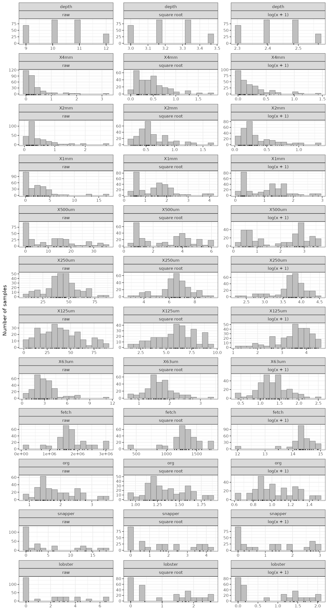
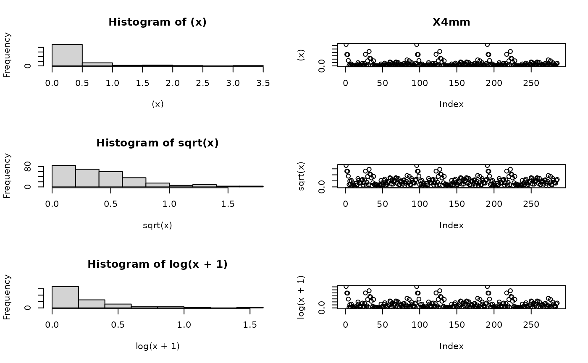
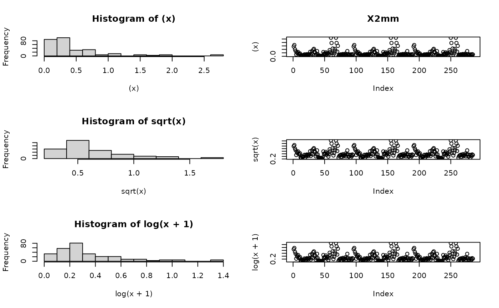
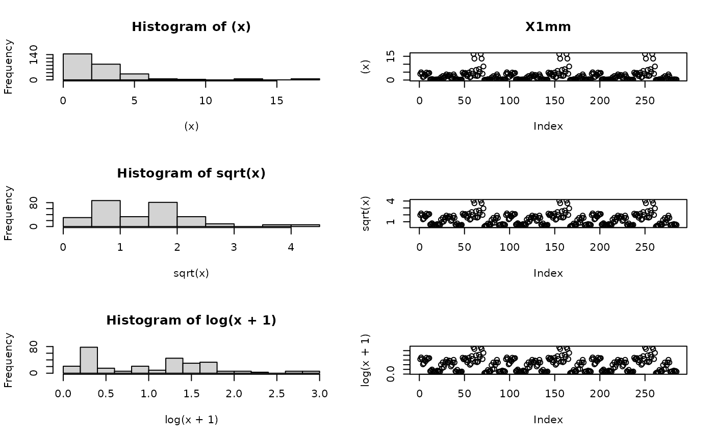
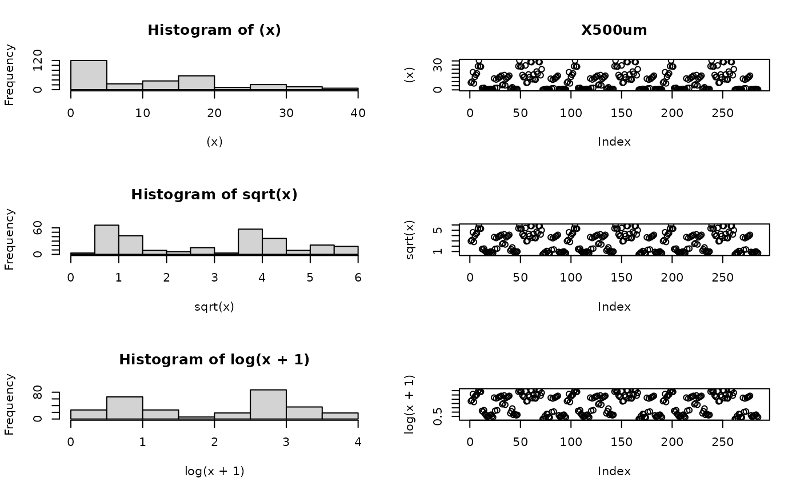
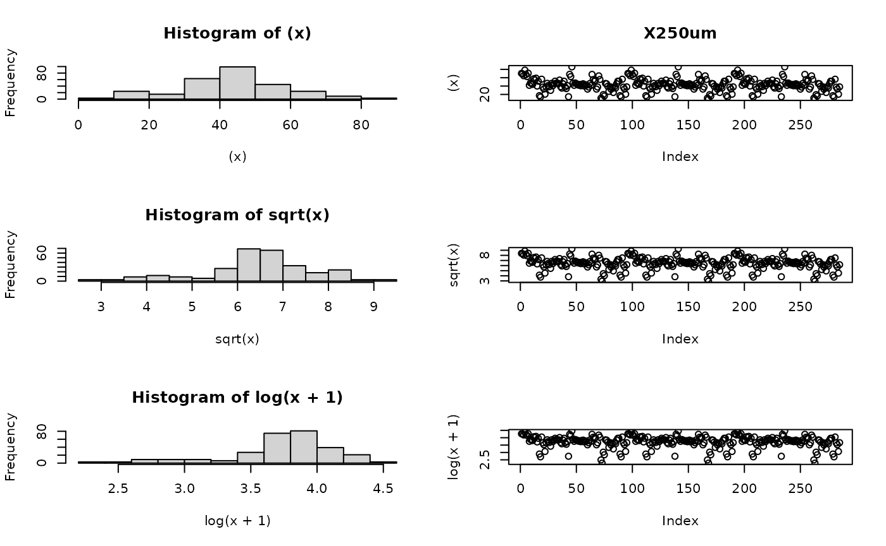
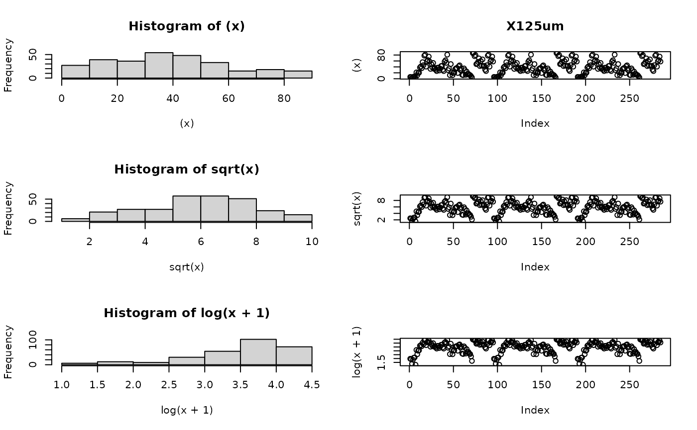
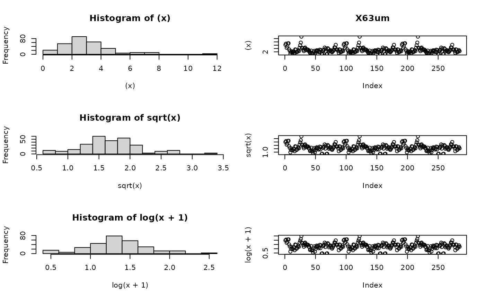
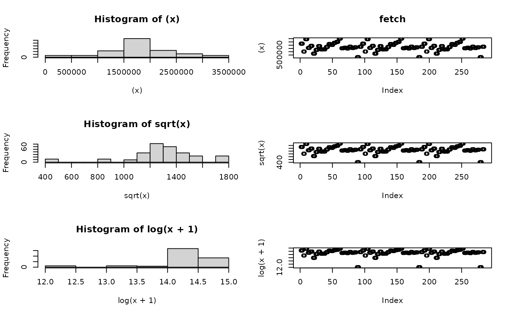
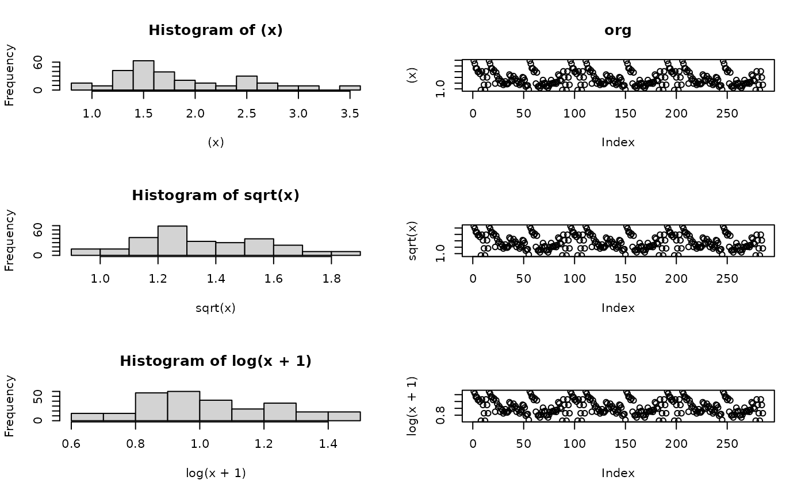
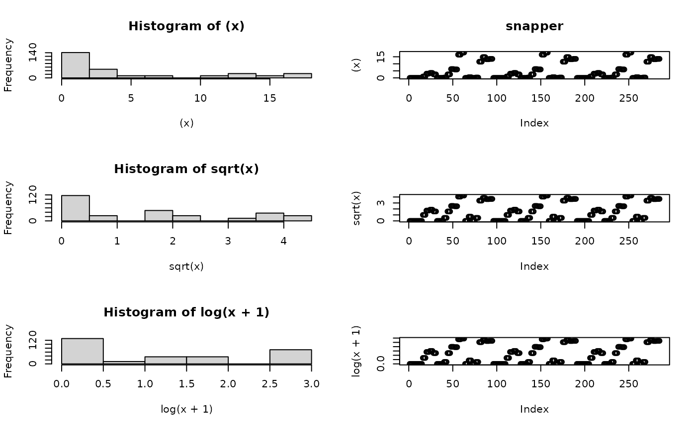
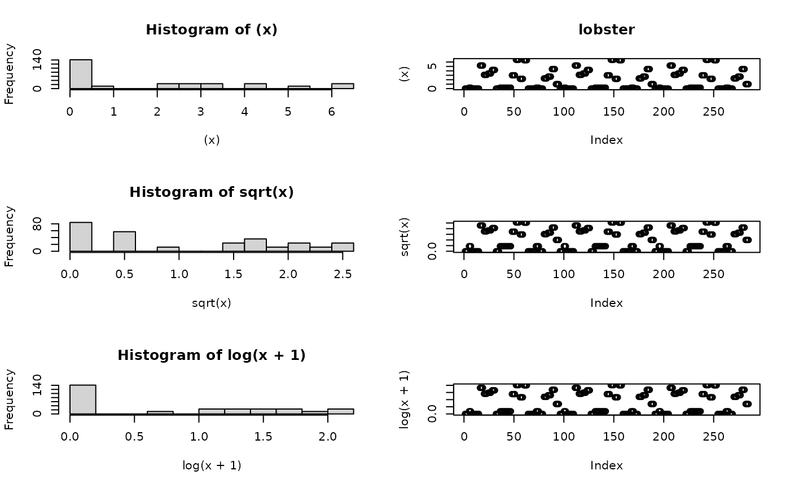
Review of individual predictors - we have to make sure they have an even distribution.
If the data are squewed to low numbers try sqrt>log or if skewed to high numbers try ^2 of ^3 Decided that X4mm, X2mm, X1mm and X500um needed a sqrt transformation
Decided Depth, x63um, InPreds and BioTurb were not informative variables.
Re-set the predictors for modeling.
pred.vars=c("sqrt.X4mm","sqrt.X2mm","sqrt.X1mm","sqrt.X500um",
"fetch","org","snapper","lobster") Screening taxa
Check to make sure Response vector has not more than 80% zeros
unique.vars=unique(as.character(dat$Taxa))
unique.vars.use=character()
for(i in 1:length(unique.vars)){
temp.dat=dat[which(dat$Taxa==unique.vars[i]),]
if(length(which(temp.dat$response==0))/nrow(temp.dat)<0.8){
unique.vars.use=c(unique.vars.use,unique.vars[i])}
}
unique.vars.use ## [1] "BDS" "BMS" "CPN"“BDS” bivalve Dosina subrosea
“BMS” bivalve Myadora striata
“CPN” crustacean Pagrus novaezelandiae
Extract Model fits and importance
names(out.all)=resp.vars
names(var.imp)=resp.vars
all.mod.fits=do.call("rbind",out.all)
all.var.imp=do.call("rbind",var.imp)
knitr::kable(
all.mod.fits,
digits = 3,
caption = "Summary of all fitted FSSgam models"
)| modname | formula | AICc | BIC | r2.vals | r2.vals.unique | edf | edf.less.1 | delta.AICc | delta.BIC | wi.AICc | wi.BIC | sqrt.X4mm | sqrt.X2mm | sqrt.X1mm | sqrt.X500um | fetch | org | snapper | lobster | Status | Distance | cumsum.wi | |
|---|---|---|---|---|---|---|---|---|---|---|---|---|---|---|---|---|---|---|---|---|---|---|---|
| BDS.Distance+sqrt.X4mm | Distance+sqrt.X4mm | s(sqrt.X4mm, k = 3, bs = “cr”) + Distance + s(Location, Site, bs = “re”) | 276.405 | 321.906 | 0.529 | NA | 23.24 | 0 | 0.000 | 0.000 | 0.677 | 0.721 | 1 | 0 | 0 | 0 | 0 | 0 | 0 | 0 | 0 | 1 | 0.677 |
| BDS.Distance.t.Status+sqrt.X4mm+Status | Distance.t.Status+sqrt.X4mm+Status | s(sqrt.X4mm, k = 3, bs = “cr”) + Distance + Status + s(Location, Site, bs = “re”) + Distance:Status | 277.884 | 323.807 | 0.517 | NA | 23.82 | 0 | 1.480 | 1.901 | 0.323 | 0.279 | 1 | 0 | 0 | 0 | 0 | 0 | 0 | 0 | 1 | 1 | 1.000 |
| BMS.fetch.by.Status+sqrt.X4mm+Status | fetch.by.Status+sqrt.X4mm+Status | s(sqrt.X4mm, k = 3, bs = “cr”) + s(fetch, by = Status, k = 3, bs = “cr”) + Status + s(Location, Site, bs = “re”) | 157.220 | 195.278 | 0.114 | NA | 15.70 | 0 | 0.000 | 0.000 | 0.630 | 0.909 | 1 | 0 | 0 | 0 | 1 | 0 | 0 | 0 | 1 | 0 | 0.630 |
| BMS.fetch.by.Status+sqrt.X4mm.by.Status+Status | fetch.by.Status+sqrt.X4mm.by.Status+Status | s(fetch, by = Status, k = 3, bs = “cr”) + s(sqrt.X4mm, by = Status, k = 3, bs = “cr”) + Status + s(Location, Site, bs = “re”) | 158.379 | 199.933 | 0.116 | NA | 17.70 | 0 | 1.159 | 4.655 | 0.353 | 0.089 | 1 | 0 | 0 | 0 | 1 | 0 | 0 | 0 | 1 | 0 | 0.983 |
| CPN | lobster+org+sqrt.X4mm | s(lobster, k = 3, bs = “cr”) + s(org, k = 3, bs = “cr”) + s(sqrt.X4mm, k = 3, bs = “cr”) + s(Location, Site, bs = “re”) | 399.262 | 446.531 | 0.481 | NA | 24.75 | 0 | 0.000 | 0.000 | 0.988 | 0.983 | 1 | 0 | 0 | 0 | 0 | 1 | 0 | 1 | 0 | 0 | 0.988 |
knitr::kable(
all.var.imp,
digits = 3,
caption = "Variable importance scores across response variables"
)| sqrt.X4mm | sqrt.X2mm | sqrt.X1mm | sqrt.X500um | fetch | org | snapper | lobster | Status | Distance | |
|---|---|---|---|---|---|---|---|---|---|---|
| BDS | 1.000 | 0 | 0.000 | 0 | 0 | 0.000 | 0.000 | 0.000 | 0.323 | 1.000 |
| BMS | 0.984 | 0 | 0.000 | 0 | 1 | 0.000 | 0.017 | 0.000 | 0.983 | 0.013 |
| CPN | 0.988 | 0 | 0.013 | 0 | 0 | 1.001 | 0.000 | 0.996 | 0.005 | 0.000 |
Variable importance
heatmap.2(
all.var.imp,
dendrogram = "none",
col = colorRampPalette(c("white", "yellow", "red"))(10),
trace = "none",
key = TRUE,
notecol = "black",
sepcolor = "black",
margins = c(6, 4),
Rowv = FALSE,
Colv = FALSE
)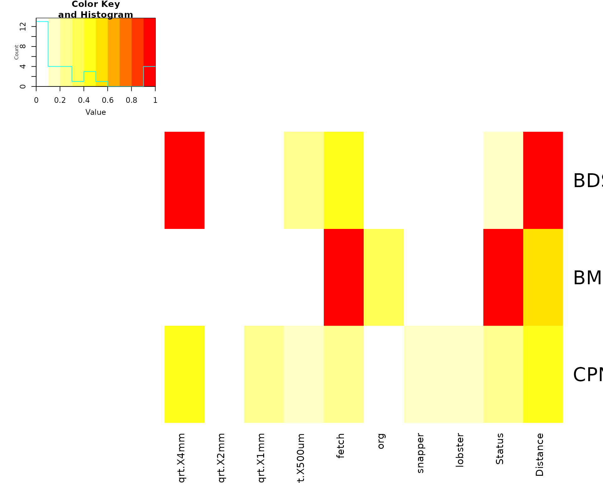
Part 2 - custom plot of importance scores
dat.taxa <- all.var.imp |>
as.data.frame() |>
tibble::rownames_to_column("resp.var") |>
pivot_longer(
cols = -resp.var,
names_to = "predictor",
values_to = "importance"
) |>
glimpse()## Rows: 30
## Columns: 3
## $ resp.var <chr> "BDS", "BDS", "BDS", "BDS", "BDS", "BDS", "BDS", "BDS", "BD…
## $ predictor <chr> "sqrt.X4mm", "sqrt.X2mm", "sqrt.X1mm", "sqrt.X500um", "fetc…
## $ importance <dbl> 1.000, 0.000, 0.000, 0.000, 0.000, 0.000, 0.000, 0.000, 0.3…
gg.importance.scores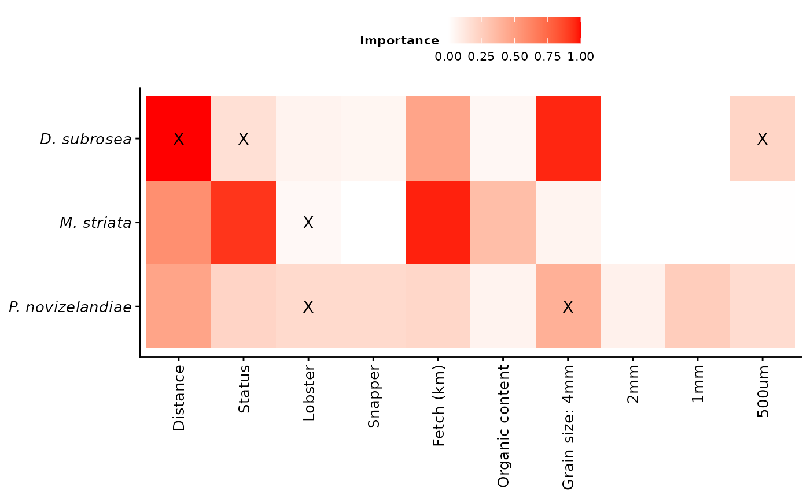
Part 3 - plots of the most parsimonious models
Make an suitable theme
Theme1 <- theme(
panel.grid.major = element_blank(),
panel.grid.minor = element_blank(),
legend.background = element_blank(),
legend.key = element_blank(),
legend.text = element_text(size = 15),
legend.title = element_blank(),
legend.position = c(0.2, 0.8),
text = element_text(size = 15),
strip.text.y = element_text(size = 15, angle = 0),
axis.title.x = element_text(vjust = 0.3, size = 15),
axis.title.y = element_text(vjust = 0.6, angle = 90, size = 15),
axis.text.x = element_text(size = 15),
axis.text.y = element_text(size = 15),
axis.line.x = element_line(colour = "black", linewidth = 0.5, linetype = "solid"),
axis.line.y = element_line(colour = "black", linewidth = 0.5, linetype = "solid"),
strip.background = element_blank()
)
name<-"clams"Manually make the most parsimonious GAM models for each taxa
MODEL Bivalve.Dosina.subrosea 500um + Distance x Status
dat.bds<-dat%>%filter(Taxa=="BDS")
gamm=gam(response~s(sqrt.X500um,k=3,bs='cr')+s(Distance,k=1,bs='cr', by=Status)+ s(Location,Site,bs="re")+ Status, family=tw(),data=dat.bds)Predict - status from MODEL Bivalve.Dosina.subrosea—-
mod<-gamm
testdata <- expand.grid(Distance=mean(mod$model$Distance),
sqrt.X500um=mean(mod$model$sqrt.X500um),
Location=(mod$model$Location),
Site=(mod$model$Site),
Status = c("Fished","No-take"))%>%
distinct()%>%
glimpse()## Rows: 144
## Columns: 5
## $ Distance <dbl> 12.97895, 12.97895, 12.97895, 12.97895, 12.97895, 12.97895…
## $ sqrt.X500um <dbl> 2.855525, 2.855525, 2.855525, 2.855525, 2.855525, 2.855525…
## $ Location <fct> Hahei, Leigh, Tawharanui, Hahei, Leigh, Tawharanui, Hahei,…
## $ Site <fct> Cooks Beach Inner, Cooks Beach Inner, Cooks Beach Inner, C…
## $ Status <fct> Fished, Fished, Fished, Fished, Fished, Fished, Fished, Fi…
fits <- predict.gam(mod, newdata=testdata, type='response', se.fit=T)
predicts.bds.status = testdata%>%data.frame(fits)%>%
group_by(Status)%>% #only change here
summarise(response=mean(fit),se.fit=mean(se.fit))%>%
ungroup()
predicts.bds.status %>%
glimpse()## Rows: 2
## Columns: 3
## $ Status <fct> Fished, No-take
## $ response <dbl> 2.8646047, 0.7276123
## $ se.fit <dbl> 2.390011, 0.619802predict - Distance.x.status from MODEL Bivalve.Dosina.subrosea—-
mod<-gamm
testdata <- expand.grid(Distance=seq(min(dat$Distance),max(dat$Distance),length.out = 20),
sqrt.X500um=mean(mod$model$sqrt.X500um),
Location=(mod$model$Location),
Site=(mod$model$Site),
Status = c("Fished","No-take"))%>%
distinct()%>%
glimpse()## Rows: 2,880
## Columns: 5
## $ Distance <dbl> 2.000000, 3.473684, 4.947368, 6.421053, 7.894737, 9.368421…
## $ sqrt.X500um <dbl> 2.855525, 2.855525, 2.855525, 2.855525, 2.855525, 2.855525…
## $ Location <fct> Hahei, Hahei, Hahei, Hahei, Hahei, Hahei, Hahei, Hahei, Ha…
## $ Site <fct> Cooks Beach Inner, Cooks Beach Inner, Cooks Beach Inner, C…
## $ Status <fct> Fished, Fished, Fished, Fished, Fished, Fished, Fished, Fi…
fits <- predict.gam(mod, newdata=testdata, type='response', se.fit=T)
predicts.bds.Distance.x.status = testdata%>%data.frame(fits)%>%
group_by(Distance,Status)%>%
summarise(response=mean(fit),se.fit=mean(se.fit))%>%
ungroup()
predicts.bds.Distance.x.status |>
glimpse()## Rows: 40
## Columns: 4
## $ Distance <dbl> 2.000000, 2.000000, 3.473684, 3.473684, 4.947368, 4.947368, 6…
## $ Status <fct> Fished, No-take, Fished, No-take, Fished, No-take, Fished, No…
## $ response <dbl> 2.0505723, 0.4356395, 2.1446873, 0.4666912, 2.2431218, 0.4999…
## $ se.fit <dbl> 1.7306685, 0.3823930, 1.8058795, 0.4073529, 1.8848049, 0.4341…Predict 500um from MODEL Bivalve.Dosina.subrosea—-
mod<-gamm
testdata <- expand.grid(sqrt.X500um=seq(min(dat$sqrt.X500um),max(dat$sqrt.X500um),length.out = 20),
Distance=mean(mod$model$Distance),
Location=(mod$model$Location),
Site=(mod$model$Site),
Status = c("Fished","No-take"))%>%
distinct()%>%
glimpse()## Rows: 2,880
## Columns: 5
## $ sqrt.X500um <dbl> 0.4630875, 0.7521858, 1.0412841, 1.3303825, 1.6194808, 1.9…
## $ Distance <dbl> 12.97895, 12.97895, 12.97895, 12.97895, 12.97895, 12.97895…
## $ Location <fct> Hahei, Hahei, Hahei, Hahei, Hahei, Hahei, Hahei, Hahei, Ha…
## $ Site <fct> Cooks Beach Inner, Cooks Beach Inner, Cooks Beach Inner, C…
## $ Status <fct> Fished, Fished, Fished, Fished, Fished, Fished, Fished, Fi…
fits <- predict.gam(mod, newdata=testdata, type='response', se.fit=T)
predicts.bds.500um = testdata%>%data.frame(fits)%>%
group_by(sqrt.X500um)%>%
summarise(response=mean(fit),se.fit=mean(se.fit))%>%
ungroup()
predicts.bds.500um %>%
glimpse()## Rows: 20
## Columns: 3
## $ sqrt.X500um <dbl> 0.4630875, 0.7521858, 1.0412841, 1.3303825, 1.6194808, 1.9…
## $ response <dbl> 4.6448757, 4.1410544, 3.6918819, 3.2914306, 2.9344158, 2.6…
## $ se.fit <dbl> 4.0647102, 3.5813495, 3.1606276, 2.7942131, 2.4748134, 2.1…MODEL Bivalve.Myadora.striata Lobster
## sediment Location Status Site Distance depth X4mm X2mm
## 1 -3.262500 Hahei Fished Cooks Beach Inner 2 12 3.16462 1.41119
## 2 -3.483828 Hahei Fished Cooks Beach Inner 5 12 1.69129 1.62811
## X1mm X500um X250um X125um X63um fetch org snapper lobster
## 1 3.88962 8.69694 70.31984 6.19663 6.25038 2232582 3.45785 0 0
## 2 4.86726 9.92831 69.18594 5.70317 6.92941 2232582 3.19104 0 0
## InPreds BioTurb Taxa response sqrt.X4mm sqrt.X2mm sqrt.X1mm sqrt.X500um
## 1 0 0.1666667 BMS 6 1.778938 1.187935 1.972212 2.949057
## 2 0 0.1666667 BMS 4 1.300496 1.275974 2.206187 3.150922
gamm=gam(response~s(lobster,k=3,bs='cr')+ s(Location,Site,bs="re"), family=tw(),data=dat.bms)
# predict - lobster from model for Bivalve.Myadora.striata ----
mod<-gamm
testdata <- expand.grid(lobster=seq(min(dat$lobster),max(dat$lobster),length.out = 20),
Location=(mod$model$Location),
Site=(mod$model$Site),
Status = c("Fished","No-take"))%>%
distinct()%>%
glimpse()## Rows: 2,880
## Columns: 4
## $ lobster <dbl> 0.0000000, 0.3421053, 0.6842105, 1.0263158, 1.3684211, 1.7105…
## $ Location <fct> Hahei, Hahei, Hahei, Hahei, Hahei, Hahei, Hahei, Hahei, Hahei…
## $ Site <fct> Cooks Beach Inner, Cooks Beach Inner, Cooks Beach Inner, Cook…
## $ Status <fct> Fished, Fished, Fished, Fished, Fished, Fished, Fished, Fishe…
fits <- predict.gam(mod, newdata=testdata, type='response', se.fit=T)
predicts.bms.lobster = testdata%>%data.frame(fits)%>%
group_by(lobster)%>%
summarise(response=mean(fit),se.fit=mean(se.fit))%>%
ungroup()
predicts.bms.lobster %>%
glimpse()## Rows: 20
## Columns: 3
## $ lobster <dbl> 0.0000000, 0.3421053, 0.6842105, 1.0263158, 1.3684211, 1.7105…
## $ response <dbl> 1.93534254, 1.56507086, 1.26563993, 1.02349643, 0.82768005, 0…
## $ se.fit <dbl> 1.73352921, 1.38496562, 1.11267638, 0.89887748, 0.72994634, 0…MODEL Decapod.P.novazelandiae 4mm + Lobster
## sediment Location Status Site Distance depth X4mm X2mm
## 1 -3.262500 Hahei Fished Cooks Beach Inner 2 12 3.16462 1.41119
## 2 -3.483828 Hahei Fished Cooks Beach Inner 5 12 1.69129 1.62811
## X1mm X500um X250um X125um X63um fetch org snapper lobster
## 1 3.88962 8.69694 70.31984 6.19663 6.25038 2232582 3.45785 0 0
## 2 4.86726 9.92831 69.18594 5.70317 6.92941 2232582 3.19104 0 0
## InPreds BioTurb Taxa response sqrt.X4mm sqrt.X2mm sqrt.X1mm sqrt.X500um
## 1 0 0.1666667 CPN 3 1.778938 1.187935 1.972212 2.949057
## 2 0 0.1666667 CPN 11 1.300496 1.275974 2.206187 3.150922
gamm=gam(response~s(sqrt.X4mm,k=3,bs='cr')+s(lobster,k=3,bs='cr')+ s(Location,Site,bs="re"), family=tw(),data=dat.cpn)Predict - sqrt.X4mm from model for Decapod.P.novazelandiae —-
mod<-gamm
testdata <- expand.grid(sqrt.X4mm=seq(min(dat$sqrt.X4mm),max(dat$sqrt.X4mm),length.out = 20),
lobster=mean(mod$model$lobster),
Location=(mod$model$Location),
Site=(mod$model$Site),
Status = c("Fished","No-take"))%>%
distinct()%>%
glimpse()## Rows: 2,880
## Columns: 5
## $ sqrt.X4mm <dbl> 0.00000000, 0.09362831, 0.18725662, 0.28088493, 0.37451324, …
## $ lobster <dbl> 1.909474, 1.909474, 1.909474, 1.909474, 1.909474, 1.909474, …
## $ Location <fct> Hahei, Hahei, Hahei, Hahei, Hahei, Hahei, Hahei, Hahei, Hahe…
## $ Site <fct> Cooks Beach Inner, Cooks Beach Inner, Cooks Beach Inner, Coo…
## $ Status <fct> Fished, Fished, Fished, Fished, Fished, Fished, Fished, Fish…
fits <- predict.gam(mod, newdata=testdata, type='response', se.fit=T)
predicts.cpn.4mm = testdata%>%data.frame(fits)%>%
group_by(sqrt.X4mm)%>% #only change here
summarise(response=mean(fit),se.fit=mean(se.fit))%>%
ungroup()
predicts.cpn.4mm %>%
glimpse()## Rows: 20
## Columns: 3
## $ sqrt.X4mm <dbl> 0.00000000, 0.09362831, 0.18725662, 0.28088493, 0.37451324, …
## $ response <dbl> 4.822420, 4.499149, 4.197548, 3.916164, 3.653641, 3.408715, …
## $ se.fit <dbl> 3.235051, 2.979428, 2.751207, 2.547690, 2.366325, 2.204703, …Predict - lobster from model for Decapod.P.novazelandiae —-
mod<-gamm
testdata <- expand.grid(lobster=seq(min(dat$lobster),max(dat$lobster),length.out = 20),
sqrt.X4mm=mean(mod$model$sqrt.X4mm),
Location=(mod$model$Location),
Site=(mod$model$Site),
Status = c("Fished","No-take"))%>%
distinct()%>%
glimpse()## Rows: 2,880
## Columns: 5
## $ lobster <dbl> 0.0000000, 0.3421053, 0.6842105, 1.0263158, 1.3684211, 1.710…
## $ sqrt.X4mm <dbl> 0.4572685, 0.4572685, 0.4572685, 0.4572685, 0.4572685, 0.457…
## $ Location <fct> Hahei, Hahei, Hahei, Hahei, Hahei, Hahei, Hahei, Hahei, Hahe…
## $ Site <fct> Cooks Beach Inner, Cooks Beach Inner, Cooks Beach Inner, Coo…
## $ Status <fct> Fished, Fished, Fished, Fished, Fished, Fished, Fished, Fish…
fits <- predict.gam(mod, newdata=testdata, type='response', se.fit=T)
predicts.cpn.lobster = testdata%>%data.frame(fits)%>%
group_by(lobster)%>%
summarise(response=mean(fit),se.fit=mean(se.fit))%>%
ungroup()
predicts.cpn.lobster %>%
glimpse()## Rows: 20
## Columns: 3
## $ lobster <dbl> 0.0000000, 0.3421053, 0.6842105, 1.0263158, 1.3684211, 1.7105…
## $ response <dbl> 4.560408, 4.334946, 4.120627, 3.916900, 3.723238, 3.539142, 3…
## $ se.fit <dbl> 3.038395, 2.857564, 2.693471, 2.544742, 2.410040, 2.288081, 2…PLOTS for Bivalve.Dosina.subrosea 500um + Distance x Status
ggmod.bds.status<- ggplot(aes(x=Status,y=response,fill=Status,colour=Status), data=predicts.bds.status) +
ylab(" ")+
xlab('Status')+
scale_fill_manual(labels = c("Fished", "No-take"),values=c("red", "black"))+
scale_colour_manual(labels = c("Fished", "No-take"),values=c("red", "black"))+
scale_x_discrete(limits = rev(levels(predicts.bds.status$Status)))+
geom_bar(stat = "identity")+
geom_errorbar(aes(ymin = response-se.fit,ymax = response+se.fit),width = 0.5) +
theme_classic()+
Theme1+
annotate("text", x = -Inf, y=Inf, label = "(a)",vjust = 1, hjust = -.1,size=5)+
annotate("text", x = -Inf, y=Inf, label = " Dosinia subrosea",vjust = 1, hjust = -.1,size=5,fontface="italic")
ggmod.bds.status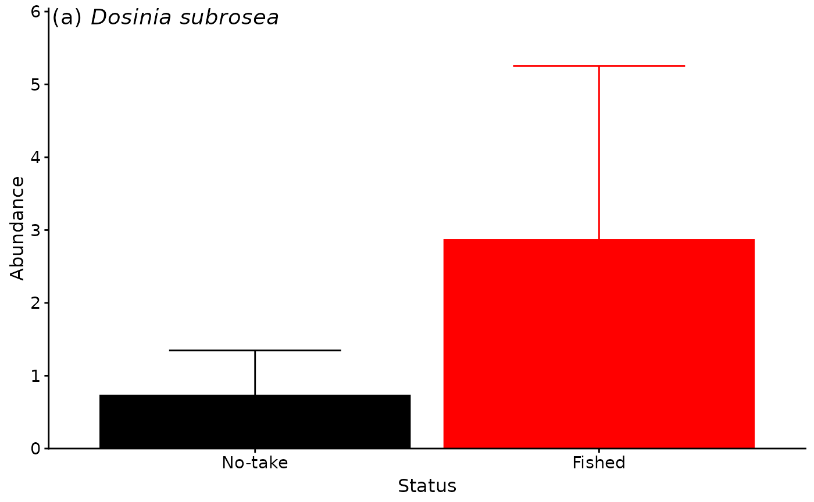
ggmod.bds.Distance.x.status<- ggplot(aes(x=Distance,y=response,colour=Status), data=dat.bds) +
ylab(" ")+
xlab('Distance (m)')+
scale_color_manual(labels = c("Fished", "No-take"),values=c("red", "black"))+
geom_jitter(width = 0.25,height = 0,alpha=0.75, size=2,show.legend=FALSE)+
# geom_point(alpha=0.75, size=2)+
geom_line(data=predicts.bds.Distance.x.status,show.legend=FALSE)+
geom_line(data=predicts.bds.Distance.x.status,aes(y=response - se.fit),linetype="dashed",show.legend=FALSE)+
geom_line(data=predicts.bds.Distance.x.status,aes(y=response + se.fit),linetype="dashed",show.legend=FALSE)+
theme_classic()+
Theme1+
annotate("text", x = -Inf, y=Inf, label = "(b)",vjust = 1, hjust = -.1,size=5)
ggmod.bds.Distance.x.status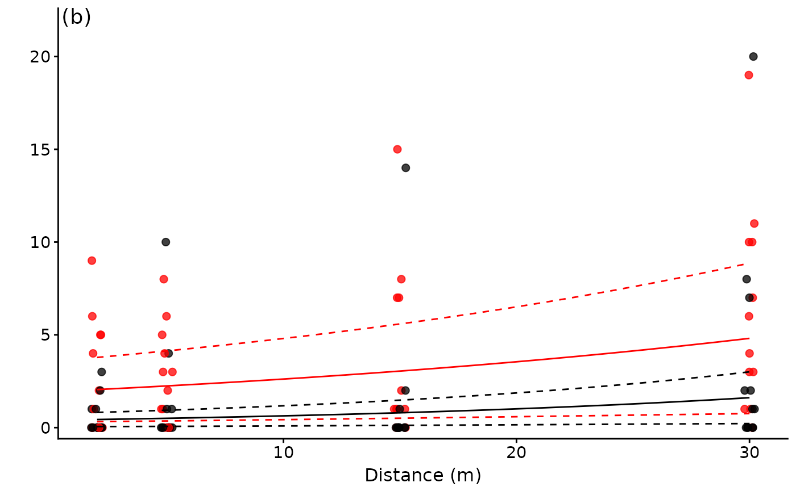
ggmod.bds.500um<- ggplot() +
ylab(" ")+
xlab('Grain size: 500 um (sqrt)')+
scale_color_manual(labels = c("Fished", "No-take"),values=c("red", "black"))+
geom_point(data=dat.bds,aes(x=sqrt.X500um,y=response,colour=Status), alpha=0.75, size=2,show.legend=FALSE)+
geom_line(data=predicts.bds.500um,aes(x=sqrt.X500um,y=response),alpha=0.5)+
geom_line(data=predicts.bds.500um,aes(x=sqrt.X500um,y=response - se.fit),linetype="dashed",alpha=0.5)+
geom_line(data=predicts.bds.500um,aes(x=sqrt.X500um,y=response + se.fit),linetype="dashed",alpha=0.5)+
theme_classic()+
Theme1+
annotate("text", x = -Inf, y=Inf, label = "(c)",vjust = 1, hjust = -.1,size=5)
ggmod.bds.500um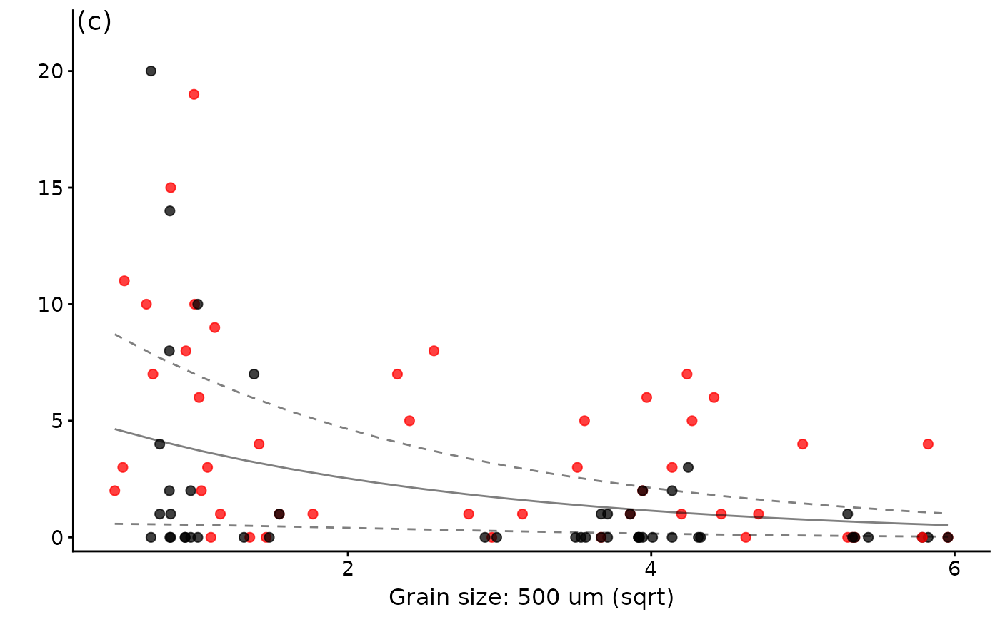
PLOTS Bivalve M.striata lobster
ggmod.bms.lobster<- ggplot() +
ylab("Abundance")+
xlab(bquote('Density of legal lobster (no./25' *m^-2*')'))+
scale_color_manual(labels = c("Fished", "SZ"),values=c("red", "black"))+
geom_point(data=dat.bms,aes(x=lobster,y=response,colour=Status), alpha=0.75, size=2,show.legend=FALSE)+
geom_line(data=predicts.bms.lobster,aes(x=lobster,y=response),alpha=0.5)+
geom_line(data=predicts.bms.lobster,aes(x=lobster,y=response - se.fit),linetype="dashed",alpha=0.5)+
geom_line(data=predicts.bms.lobster,aes(x=lobster,y=response + se.fit),linetype="dashed",alpha=0.5)+
theme_classic()+
Theme1+
annotate("text", x = -Inf, y=Inf, label = "(d)",vjust = 1, hjust = -.1,size=5)+
annotate("text", x = -Inf, y=Inf, label = " Myadora striata",vjust = 1, hjust = -.1,size=5,fontface="italic")+
geom_blank(data=dat.bms,aes(x=lobster,y=response*1.05))#to nudge data off annotations
ggmod.bms.lobster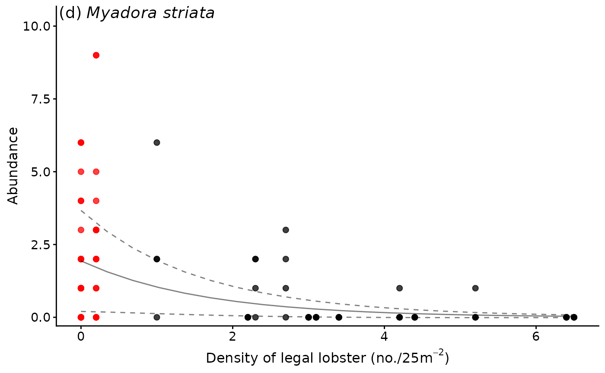
PLOTS Decapod.P.novazelandiae 4mm + lobster
ggmod.cpn.lobster<- ggplot() +
ylab(" ")+
xlab(bquote('Density of legal lobster (no./25' *m^-2*')'))+
scale_color_manual(labels = c("Fished", "SZ"),values=c("red", "black"))+
geom_point(data=dat.cpn,aes(x=lobster,y=response,colour=Status), alpha=0.75, size=2,show.legend=FALSE)+
geom_line(data=predicts.cpn.lobster,aes(x=lobster,y=response),alpha=0.5)+
geom_line(data=predicts.cpn.lobster,aes(x=lobster,y=response - se.fit),linetype="dashed",alpha=0.5)+
geom_line(data=predicts.cpn.lobster,aes(x=lobster,y=response + se.fit),linetype="dashed",alpha=0.5)+
theme_classic()+
Theme1+
annotate("text", x = -Inf, y=Inf, label = "(e)",vjust = 1, hjust = -.1,size=5)+
annotate("text", x = -Inf, y=Inf, label = " Pagurus novizelandiae",vjust = 1, hjust = -.1,size=5,fontface="italic")+
geom_blank(data=dat.cpn,aes(x=lobster,y=response*1.05))#to nudge data off annotations
ggmod.cpn.lobster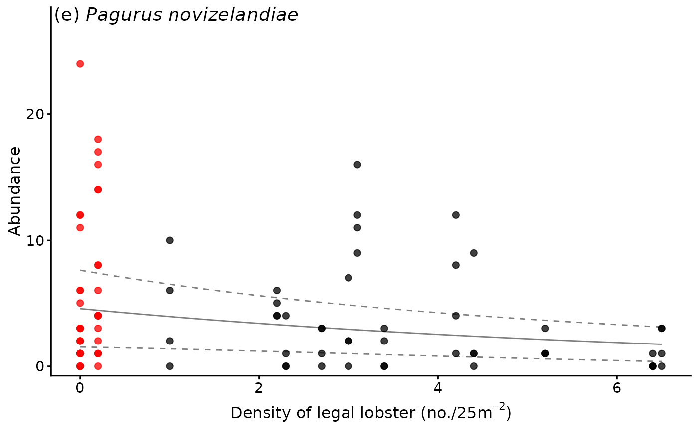
ggmod.cpn.4mm<- ggplot() +
ylab(" ")+
xlab('Grain size: 4 mm (sqrt)')+
scale_color_manual(labels = c("Fished", "No-take"),values=c("red", "black"))+
geom_point(data=dat.cpn,aes(x=sqrt.X4mm,y=response,colour=Status), alpha=0.75, size=2,show.legend=FALSE)+
geom_line(data=predicts.cpn.4mm,aes(x=sqrt.X4mm,y=response),alpha=0.5)+
geom_line(data=predicts.cpn.4mm,aes(x=sqrt.X4mm,y=response - se.fit),linetype="dashed",alpha=0.5)+
geom_line(data=predicts.cpn.4mm,aes(x=sqrt.X4mm,y=response + se.fit),linetype="dashed",alpha=0.5)+
theme_classic()+
Theme1+
annotate("text", x = -Inf, y=Inf, label = "(f)",vjust = 1, hjust = -.1,size=5)+
annotate("text", x = -Inf, y=Inf, label = " ",vjust = 1, hjust = -.1,size=5,fontface="italic")
ggmod.cpn.4mm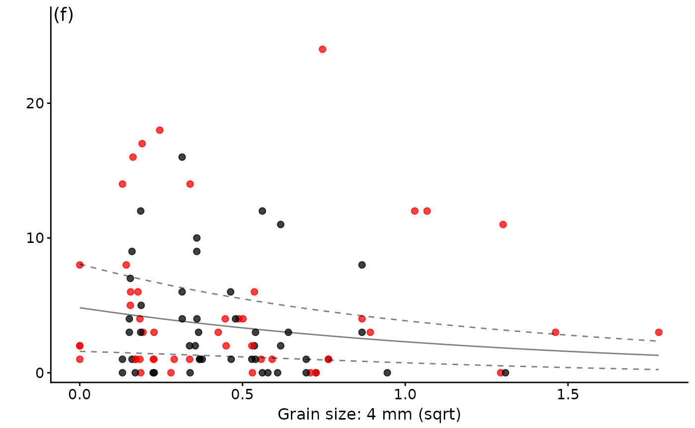
Combined.plot using grid() and gridExtra()
To see what they will look like use grid.arrange() - make sure Plot window is large enough! - or will error!
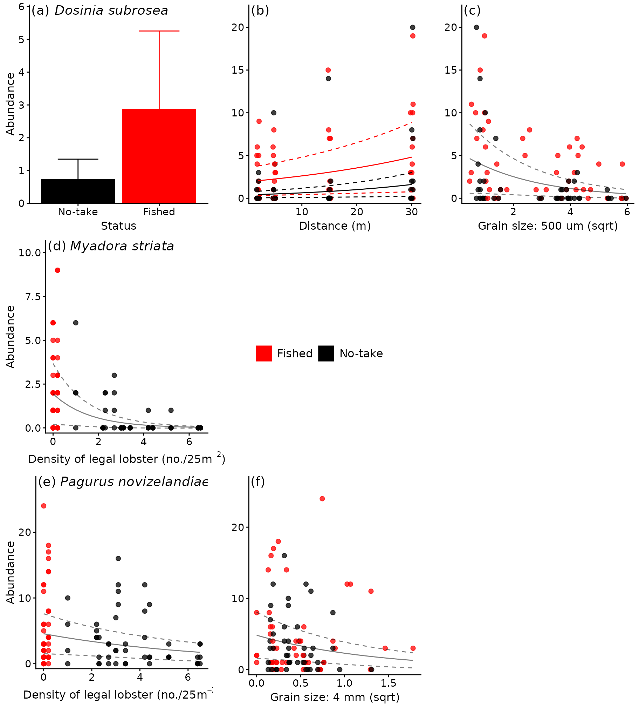
grid.arrange(ggmod.bds.status,ggmod.bds.Distance.x.status,ggmod.bds.500um,
ggmod.bms.lobster,blank,blank,
ggmod.cpn.lobster,ggmod.cpn.4mm,blank,nrow=3,ncol=3)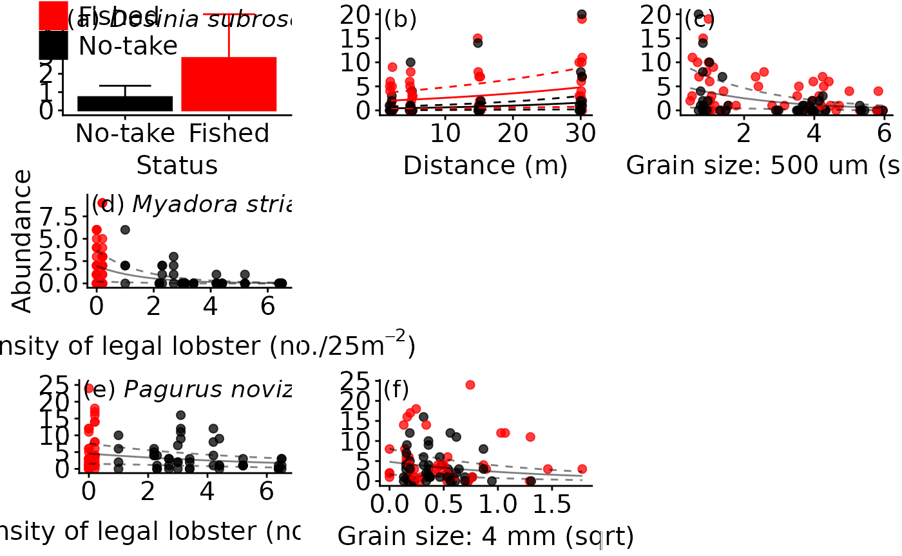
Use arrangeGrob ONLY - as we can pass this to ggsave! Note use of raw ggplot’s
combine.plot<-arrangeGrob(ggmod.bds.status,ggmod.bds.Distance.x.status,ggmod.bds.500um,
ggmod.bms.lobster,blank,blank,
ggmod.cpn.lobster,ggmod.cpn.4mm,blank,nrow=3,ncol=3)
combine.plot## TableGrob (3 x 3) "arrange": 9 grobs
## z cells name grob
## 1 1 (1-1,1-1) arrange gtable[layout]
## 2 2 (1-1,2-2) arrange gtable[layout]
## 3 3 (1-1,3-3) arrange gtable[layout]
## 4 4 (2-2,1-1) arrange gtable[layout]
## 5 5 (2-2,2-2) arrange rect[GRID.rect.299]
## 6 6 (2-2,3-3) arrange rect[GRID.rect.299]
## 7 7 (3-3,1-1) arrange gtable[layout]
## 8 8 (3-3,2-2) arrange gtable[layout]
## 9 9 (3-3,3-3) arrange rect[GRID.rect.299]